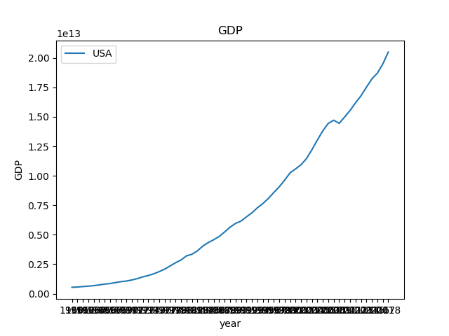
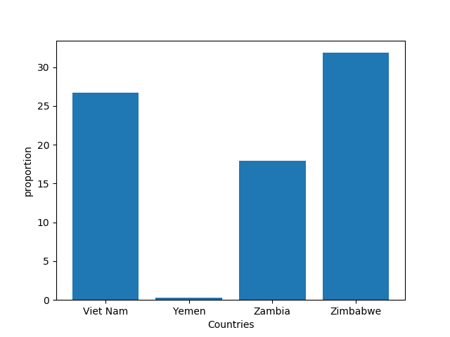

This graph shows the GDP of the US from 1960 to 2018. There is a clear upwards trend, although the data does not specify if it was adjusted for inflation. The GDP is in scientific notation so our GDP is in the trillions.
You can find the data here under "GDP", "USA" "https://github.com/jdorfman/awesome-json-datasets
This graph shows the proportion of women in national government in Vietnam, Yemen, Zambia, and Zimbabwe. This collected is from 2018 to 2019.
You can find the data here under "Gender" "http://data.un.org/"
For more information on this program, follow this link. "https://github.com/mikeizbicki/cmc-csci040/tree/master/hw_04"